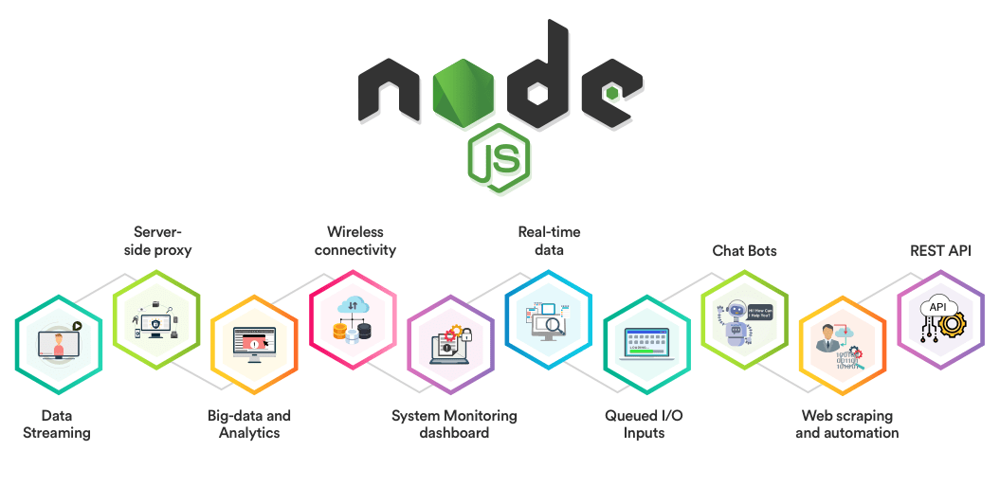

Web Devlopment roadmap in 2022
What is Web Development? What type of technology used in it?

WEB-DEVLOPMENT is a term that refers to the creating nd maintaining the websites.It is the creation of an application that works over the internet.
There are various technologies that are used in web development
- HTML
- CSS
- JS(JavaScript)
- React
- NodeJS
- MongoDB
HTML(Hyper Text Markup Language)
HTML stands for HyperText Markup Language.It is used to create the web pages using a markup language.HTML is a markup language useed to browser to manipulate the text, format nd many other content of the browser.HTML was created by Tim Berner-Lee in the year 1991.the first version of the HTML was 1.0,but further it was upgraded.

The structure of the web page is mainly divided into 3 parts.
HEADER mainly indicates or represents the conatiner for introductory content or a set navigation links.
BODY mainly contains the entire content of the web page.It is the second element inside of the parent html element.It contains the tags like paragraph , heading,nd many more tags of the html.
FOOTER tag in HTML is used to define a footer of HTML document. The footer tag is used within the body tag. The footer tag is new in the HTML5. The footer elements require a start tag as well as an end tag.
CSS (Cascading Style Sheet)
CSS (Cascading Style Sheets) is used to apply styles to web pages. Cascading Style Sheets are referred to as CSS. It is used to make web pages presentable. The reason for using this is to simplify the process of making web pages presentable. It allows you to apply styles on web pages. More importantly, it enables you to do this independently of the HTML that makes up each web page.

CSS is of mainly 3 types.
- INLNE
- INTERNAL
- EXTERNAL
INLINE css mainly is the style shet which is written mainly inside an HTML element.It is written when we have to create a small web page not having much functionality.
INTERNAL css mainly is the style shet which is written mainly inside the header part embedded in the style.It is written when we have to create a middium size web page having some functionality.
EXTERNAL css mainly is the style shhet which is written mainly seperately in an another file saved with the extension .css .It is written when we have to create a larger web page having much functionality.We can use the external css in as many HTML pages as many we want.
JavaScript

JAVASCRIPT is the programming language that is used to add some functionality to the web page.
Javascript is used by programmers across the world to create dynamic and interactive web content like applications and browsers. JavaScript is so popular that it's the most used programming language in the world, used as a client-side programming language by 97.0% of all websites. Client-side languages are those whose action takes place on the user's computer, rather than on the server. JavaScript is versatile enough to be used for a variety of different applications, like software, hardware controls, and servers. JavaScript is most known for being a web-based language, because it's native to the web browser. The web browser can naturally understand the language, like how a native English speaker can naturally understand English.
- It allows the developers to impliment some actions to the web pages:
- Adding animations.
- playing audio and videos.
- manipulating the html contents
- its provides the features such as DOM
- makes our website dynamic.
React
React is an open source and free source front-end JavaScript library which is used to build user interface based on UI.It is used to build single-page applications. It is a front-end frame work.
NodeJs
NodeJS is used for server-side programming i.e it is used for writting the back-End codes. And primarily deployed for non-blocking, event driven servers, such as traditional web sites and back-End API services, but it was originally designed to push the real-time.Every browser has its own version of JS engine.
mongoDB

MongoDB
is an open source document database and leading NoSQL database.it aws developed by MONGODB Inc. and licensed under the Server Side Public licence.Future Scope of WebDevelopment

"The demand of the Web Developer is increasing day by day so it is the one of the most demanding feild of the computer science_______"
The scope of the Web Development is divided into mainly three parts
- FRONT-END DEVELOPER
- BACK-END DEVELOPER
- FULL-STACK DEVELOPER